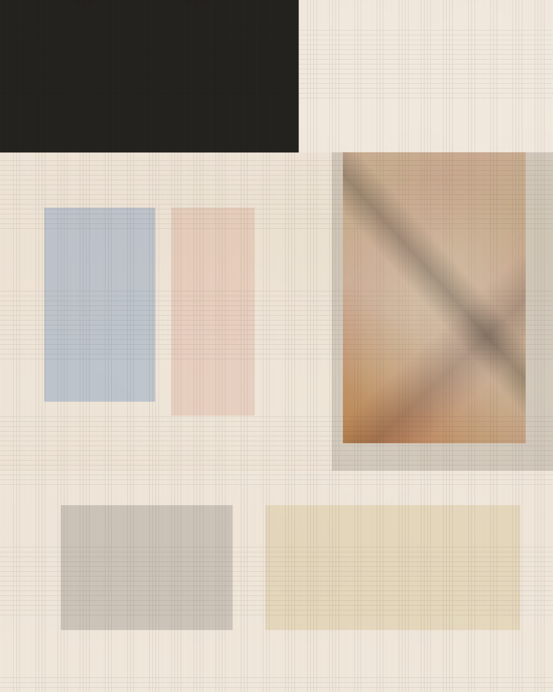

Daily intelligence on platforms, capital, and policy
AI Brief
今天的六則焦點集中在一件事：AI 的價值鏈正在被重新切分。平台要入口，企業要流程，資本市場要敘事，華府則開始問，這波紅利究竟該由誰持有。
入口比模型更值錢
OpenAI 把 ChatGPT 推向 superapp，Anthropic 先卡 IPO，Meta 則讓 Business Agent 直接碰營運流程。AI 的下一場戰爭，已經不是能力展示，而是誰掌握入口、訂價與分潤。
這是一個典型的封面日。多條新聞雖來自不同公司與機構，但都指向同一個核心問題：AI 的權力不再只由模型參數決定，而是由分發權、代理執行權與資本市場敘事共同構成。這份版面因此以單一封面敘事收束，而不是平均排成六張獨立卡片。

6 則保留重點，集中在入口、企業代理、IPO 與治理。
OpenAI 與華府的安全辯論，仍在持續往前推進。
公共持股與 Lockdown Mode 把權力與風險問題前置化。
今天更像一份財經科技特刊，而不是產品發布清單。
今天最能統攝所有訊號的，不是單一融資或單一政策，而是 OpenAI 想把聊天、寫程式與代理能力收進同一個入口。
New
ChatGPT 正朝「超級入口」改版，OpenAI 把 Codex 與 AI agents 收進同一個主畫面
OpenAI 把原本分散的聊天、寫程式與代理能力，往單一入口重新整合，顯示消費端流量正被重新包裝成企業轉換漏斗。
Reuters 引述 Financial Times 指出，OpenAI 正準備對 ChatGPT 進行迄今最大幅度改版，讓它成為整合 coding tools 與 AI agents 的 superapp，以拉高企業營收與上市前的成長敘事。TechCrunch 補充，產品目標是把免費聊天流量導向像 Codex 這類可付費能力，核心方向是把 ChatGPT 做成跨工作與個人場景的 personal agent 入口。
如果這一步成立，今天其他故事就都能被重新理解：Anthropic 在搶估值位置，Meta 在搶企業執行層，華府則在決定入口權是否應伴隨公共約束與公共回報。
Anthropic 搶先把 IPO 選項放上桌，AI 巨頭的上市賽跑正式開打
Anthropic 6 月 1 日正式確認，已向美國 SEC confidentially 提交 Form S-1 草案，為潛在 IPO 預作準備。TechCrunch 指出，這讓 Anthropic 在 OpenAI 與 SpaceX/xAI 之前率先卡位，也把 AI 產業的估值、營收成色與算力支出壓力，提前搬進公開市場檢驗。
Meta 把 Business Agent 從聊天機器人推向營運代理，直接搶企業客服與交易流程
Reuters 指出，Meta 新推出的 Business Agent 不只是回答問題，而是朝完成付款、預約與下單等實際行動前進。Meta 官方則表示，超過一百萬家企業已在 WhatsApp 與 Messenger 使用相關能力，現在再擴大推出 Business Agent Platform，讓企業能自訂並大規模部署代理。